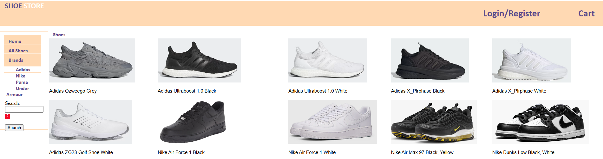
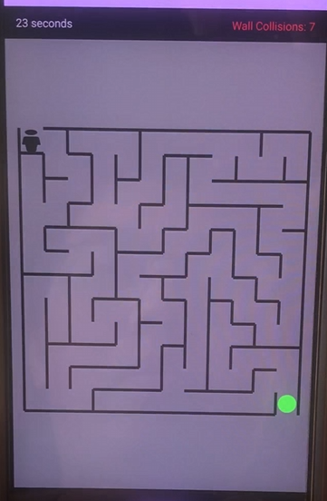
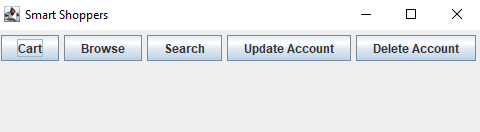

Toronto, Ontario
Email: Ngoeric2001@yahoo.ca | Cellphone: (647)-502-6208
B.Sc. Honours Computer Science
York University
September 2019 - April 2024
Courses: Software Design, Object Oriented Programming, Building E-Commerce Systems, Software Testing, Operating Systems, Mobile UI, User Interfaces
Languages: Java - JavaScript - HTML - CSS - MySQL - Junit
Tools and Frameworks: Eclipse - VS Code - SQLite - Docker - Android Studio - GitHub
Mock Shoe Store | Java, Javascript, HTML, CSS, Java Servlets, SQLite
 Collaborated with a team of three to develop a simulated online store webpage utilizing Java, Java Servlets and MySQL. Implemented features enabling user registration, login
and the ability to browse a product database and complete purcahses.
Used GitHub but the repository is private, possible to view if requested.
Maze Game | Android, Java
 Collaborated with a team of four to develop an Android application using Android Studio, featuring a dynamic maze game. The app includes ramdomized mazes that increase
in difficulty, providing users with a challenging and engaging gameplay experience.
Used GitHub but the repository is private, possible to view if requested.
GitHub Project Testing | Java, Spotbugs, Evosuite
Collaborated with a team to perform bug detection on multiple open sourced GitHub projects. Multiple bug detection tools were used, such as Evosuite and Spotbugs, bugs that were found were then reported to the GitHub project.
Smart Shoppers | Java
Developed a mock online store using Java and the MVC design pattern, This application allowed the user to register an account and log into the account, allowing them to theoretically browse and search for items to place into their cart. It also allowed the user to change their account credentials or even account deletion.